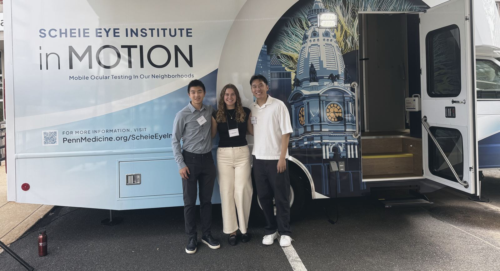

Chequeos de la vista en Filadelfia
Hágase un chequeo de la vista gratis en la clínica móvil.
Vea dónde estará la clínica móvil
Busque esta clínica móvil.
En el costado tiene pintado el City Hall dentro de un ojo grande.
Dónde estará la clínica móvil
-
De 5:30 a 7:30 p. m.
Mapa de Chosen 300 Ministries, West Philadelphia, se abre en otra páginaChosen 300 Ministries, West Philadelphia
3959 Lancaster Ave, Philadelphia, PA 19104
-
De 3 a 6 p. m.
Mapa de St. Cyprian Church, se abre en otra páginaSt. Cyprian Church
525 S Cobbs Creek Pkwy, Philadelphia, PA 19143
-
De 4 a 7 p. m.
Mapa de The Common Place, se abre en otra páginaThe Common Place
5736 Chester Ave, Philadelphia, PA 19143
-
De 10 a. m. a 1 p. m.
Mapa de Mother of Mercy House, se abre en otra páginaMother of Mercy House
720 E Allegheny Ave, Philadelphia, PA 19134
-
De 4:30 a 7:30 p. m.
Mapa de Chosen 300 Ministries, Spring Garden, se abre en otra páginaChosen 300 Ministries, Spring Garden
1116 Spring Garden St, Philadelphia, PA 19123
-
De 11 a. m. a 4 p. m.
Mapa de Chosen 300 Ministries, West Philadelphia, se abre en otra páginaChosen 300 Ministries, West Philadelphia
3959 Lancaster Ave, Philadelphia, PA 19104
-
De 3 a 7 p. m.
Mapa de Prevention Point Philadelphia, se abre en otra páginaPrevention Point Philadelphia
2913 Kensington Ave, Philadelphia, PA 19134
Por ahora no hay paradas en la lista. Escríbanos para preguntar por la próxima.
Las paradas pueden cambiar. Escríbanos para confirmar:
sharedvision2026@

Qué pasa en la clínica móvil
La clínica móvil se llama Scheie in MOTION.
-
Acérquese a la clínica móvil
No necesita cita y el chequeo es gratis.
-
Le hacen el chequeo
El equipo de la clínica móvil revisa qué tan bien ve y qué tan sanos están sus ojos.
-
Le dan los resultados
El equipo le explica lo que encontró.
-
Reciba la atención que necesita
Si hace falta, le ayudamos a conseguir lentes o una cita con el oculista.
Ayuda después del chequeo
-
Lentes gratis o a bajo costo
Damos lentes para leer gratis. Para lentes con receta, le ayudamos a solicitarlos en un programa gratis o a bajo costo.
-
Ayuda con el seguro médico
Le ayudamos a inscribirse en un seguro médico o a usar el que ya tiene.
-
Transporte a su cita con el oculista
Le ayudamos a llegar a su cita con un pase de SEPTA.
Albergues y grupos con los que trabajamos
Vea dónde están en el mapa (en inglés)-

Chosen 300 Ministries -

The Common Place -

Our Brothers’ Place, de Bethesda Project
¿Dirige un albergue o un programa?
La clínica móvil puede ir a su sitio y hacer hasta 25 chequeos gratis al día.
Lleve la clínica móvil a su sitio (en inglés)